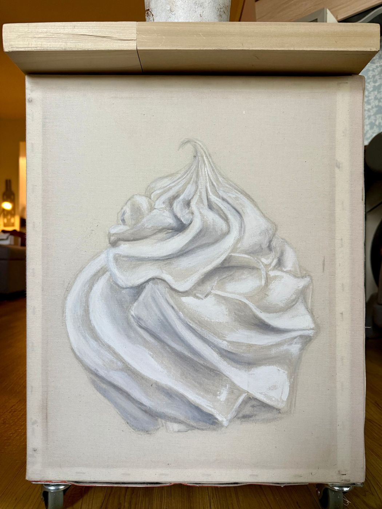

Close-ups are taken from the photograph of the original.
One-of-a-kind original · Available
Before the Taste
Functional art: a hand-built side table whose linen sides carry a painted swirl of whipped cream in soft whites and greys.
$5,000 USD
This one-of-a-kind piece is sold by inquiry. Kimberly will reply with details and delivery options.
Original artwork is final sale for change of mind. Read the returns policy.
- Artist
- Kimberly Marnell · Irvine, California
- Series
- Time for Something for You
- Medium
- Acrylic on linen, hand-built side table
- Dimensions
- 20 × 16 × 16 in
- Year
- 2025
Questions about framing or delivery?
For international delivery, framing, or any special arrangements, contact Kimberly before purchasing. Ask about any applicable tax and purchase terms before payment.
Want a painting for a particular space?
Plan a personal commission or use the interior designer booking for artwork coordinated to your project's dimensions and palette.